Cutaway
This feature helps users see inside a part or model, like cutting it open. Normally, user can only cut a section with a plane and look at it. But with this new feature, called Cutaway, user can choose different shapes like spheres, cylinders, or boxes to cut out. This lets the users understand the inside of the object in more ways.
Cutaway Panel
Cutaway function can be invoked using the menu option Tools | Cutaway...
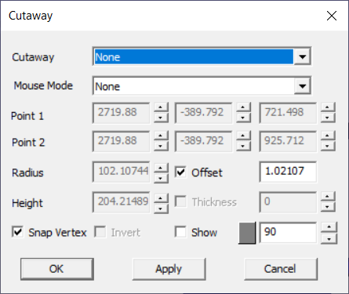
Cutaway Allows user to select a cutaway option. None option clears the cutaway function. Mouse Mode Allows users to pick points in the model to define different cutaway shapes. P1 This point becomes Center for Sphere, Base Circle Center for cylinder, Corner 1 for Box shaphes. P2 This point becomes Top Center for cylinder and Corner 2 for box shapes Radius Radius for Sphere and Cylinder. User can modify. Height Height for Cylinder. Offset Incremental step value for all edit fields. Thickness Enabled only for cylinder option. With thickness, it becomes pipe. Snap Vertex Allows user to pick a nearest vertex in picking. Invert Toggles the culling side. True will cull outside. Show Show/hides the shape with default transparency. Users can change the shape color and transparency. Apply Applies the modification. OK Applies the modification and closes dialog.
Cutaway Types
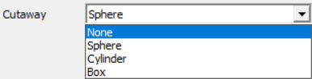
The following options are supported in cutaway.
- None
- Sphere
- Cylinder
- Box
Cutaway None
Selecting this option will remove all cutaway data and present the model without any culling.
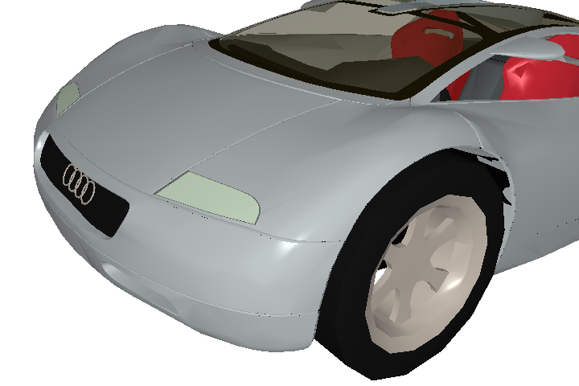
Sphere
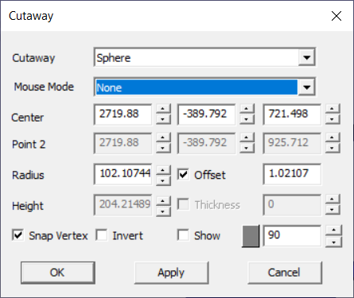
In order to define a sphere in VCollab, users have the option to enter center and radius values. VCollab offers default center and radius values based on the model's bounding data.
The center of the sphere can be defined in three ways: - Manually entering values - Selecting a vertex in the model - Selecting three points in the model to derive a circle center
Users also have the ability to manually enter the radius of the sphere.
Steps
- Load a cax file.
- Click Tools | Cutaway
- Select Sphere in the Cutaway drop down list.
- Enter center values manually in the edit boxes provided,
- Or
- Select Center option in the mousemode drop down list. This allows users to pick a point in the model.
- Click a point in the model.
- Enable Snap Vertex option to pick a nearest vertex in the model.
- Or
- Select 3Pt Arc which allow users pick any three points to define a circular arc. Arc center will be used for cutawy sphere center.
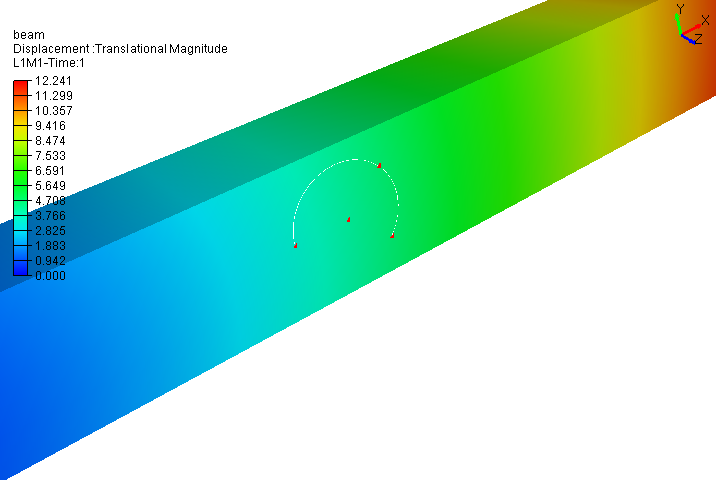
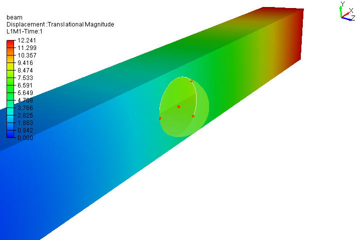
Enter Sphere radius manully.
Click Apply.
Notice in the viewer that cutaway sphere is displayed with transparency and inner portion is culled and visible to the user.
To pick and move the sphere, Select CutawayPan option.
Clcik on the cutaway surface and drag it to anywhere in the screen.
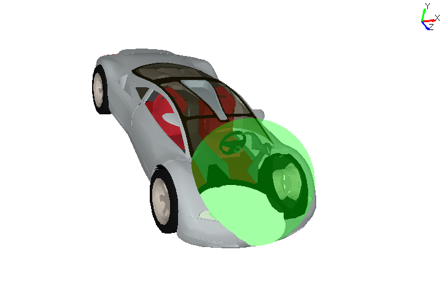
Click Invert to toggle the culling side from inside to outside.
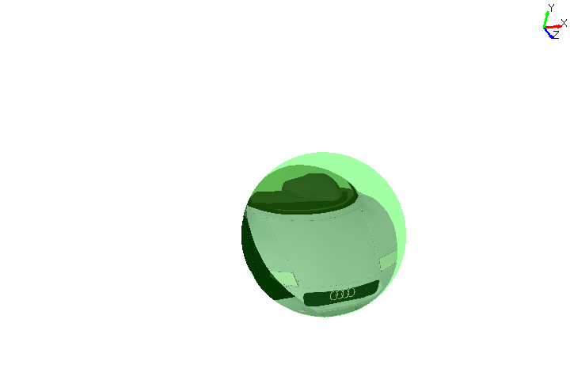
Cylinder
Once user selects the 'Cylinder' option, Panel changes as follows with base center and top center point.
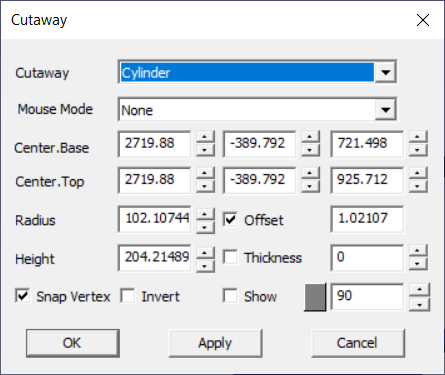
Users can define the cylinder by
- Entering base center and top center manually.
- Entering height will update the top center point values.
- User can pick the base center using Base Center option in mouse mode dropdown
- User can pick the top center using Top Center option in the mouse mode dropdown.
- User can define base center as well as top center by picking 3 points using '3Pt Arc' option in the mouse mode dropdown.
- Cutaway shape can be moved horizontally and vertically using CutawayPan option.
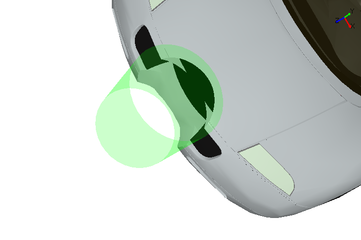
- Toggle the culling side using Invert option
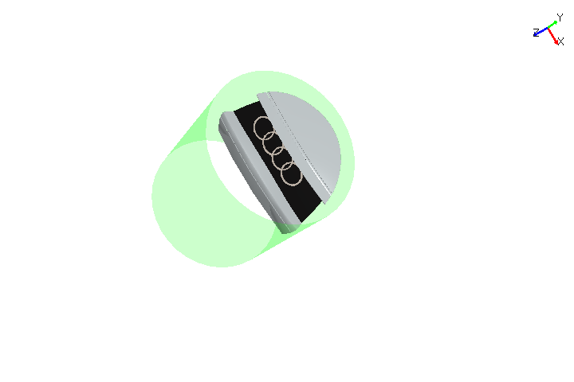
Box
Once user selects the 'Box' option, Panel changes as follows with Corner 1 and Corner 2 points.
User can define the box by,
- Entering two extreme corner point values manually,
- Pick Corner 1 and Corner 2 points using Corner 1 and Corner 2 options in the mouse mode dropdown.
- Shape can be moved using CutawayPan option in mouse mode dropdown.
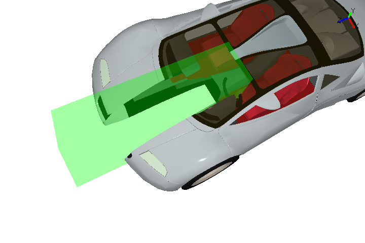
- User can toggle the culling side using Invert option.
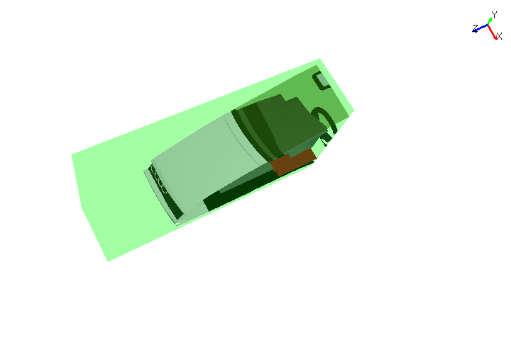
Other options
Snap Vertex - allows user to pick nearest vertex in moused mode.
Invert - allows to toggle the culling side and can visualize the zone in alternate way.
Show - allows to show or hide the cutaway shape. User can change the color of the shape and can control the shape transparency.
Offset and Spin Control - User can increment or decrement any edit field by step size value in 'Offset' field using the spin control. For example, if the offset value is 5, then spin control for any edit fiels increase or decrease 5 units for each click.